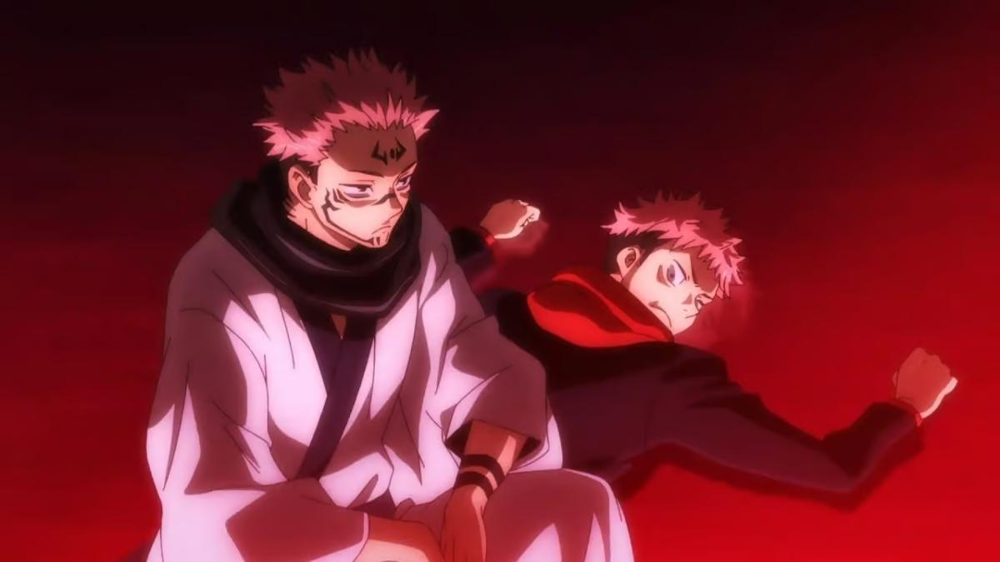

Jujutsu Kaisen, também conhecido como Jjk, é uma série de manga e anime criado e ilustrado pelo criador de mangas japonês Gege Akutami. Jujutsu Kaisen é um shonen battle, ou seja, um anime que se foca em luta. A série divide-se em arcos, tendo 9 arcos principais:

No universo de Jujutsu Kaisen as emoções negativas de todos os seres vivos libertam uma energia chamada energia amaldiçoada. Quando essa energia se acumula em quantidade suficiente são criadas maldições, criaturas que têm o propósito de magoar a humanidade. A maior parte dos humanos não consegue manipular esta energia, mas existe um conjunto de pessoas que protegem as pessoas normais destas maldições, que conseguem manipular esta energia e que não a libertam: feiticeiros de jujutsu. Os feiticeiros de jujutsu são treinados para exorcizar maldições, estando em constante perigo de morte. Alguns destes feiticeiros possuem técnicas amaldiçoadas, que lhes permitem manipular energia amaldiçoada de uma maneira especifica. Algumas técnicas são únicas ao individuo enquanto outras são herdadas. Algumas maldições de grande força apresentam técnicas amaldiçoadas. Além disso, alguns feiticeiros conseguem fazer votos vinculativos, em que cedem algo ou impõem uma condição sobre si próprios em troca de um aumento em poder. Tendo todos estes fatores em conta, além da sua inteligência e habilidade, os feiticeiros e maldições são organizados de acordo com a sua força e/ou estatuto:
Os feiticeiros de jujutsu têm de manter o mundo da feitiçaria e a sociedade de jujutsu em segredo, para impedir as pessoas de ficar com mais medo e libertar mais energia amaldiçoada.
A série foca-se na vida de Yuji Itadori, um jovem muito atlético que, depois de consumir um objeto com a energia e a alma de Ryomen Sukuna. Sukuna era um feiticeiro com 4 braços, 2 caras e 2 bocas, que usava os seus poderes para o mal há 1000 anos e que fez um voto vinculativo para permanecer vivo de forma dormente, ao separar a sua alma e energia amaldiçoada pelos seus 20 dedos das mãos. Inesperadamente Yuji consegue impedir que Sukuna tome controlo do seu corpo e como tal, em vez de executá-lo, a sociedade de jujutsu faz-lhe uma proposta: ou é morto imediatamente ou ajuda a encontrar os restantes 19 dedos para depois consumi-los e ser morto. Influenciado pelas últimas palavras do seu avô, Yuji aceita. Yuji é então treinado pelo feiticeiro mais forte da era moderna, Saturo Gojo, e também por Kento Nanami, o padrão-ouro de um feiticeiro de grau 1, ao mesmo tempo que vai em missões com os seus colegas de turma: Megumi Fushiguro e Nobara Kugisaki. À medida que a história avança conseguimos perceber que este anime é bem mais sombrio que pensávamos, especialmente depois desta temporada.
Mais informações sobre a série:
